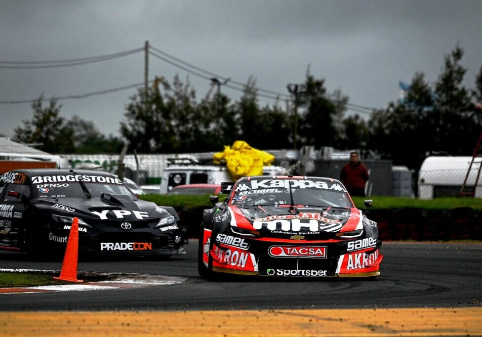
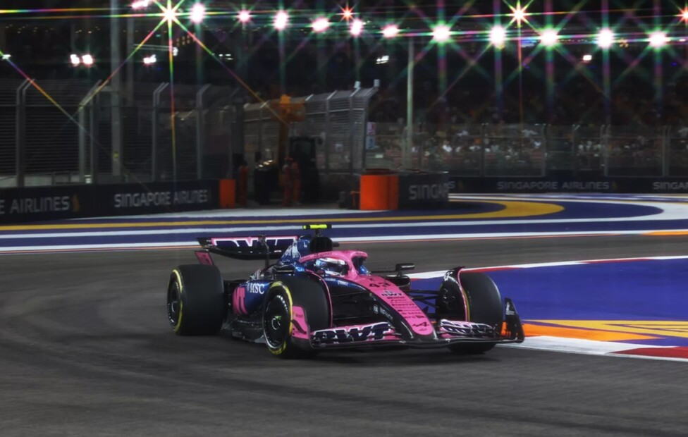

Destacado

Lo que no se logra en Formula 1, se logra en Hypercar
Ferrari AF Corse consolida en Bahrein los títulos de pilotos del auto 51 y de fabricantes mientras que los autos 83 (ganador de Le Mans este año) de AF Corse y 50 completan un campeonato redondo para Maranello en el WEC Leer más
Últimas noticias

TC en San Nicolás: Canapino festejó tras doblegar a Rossi en una Final memorable
